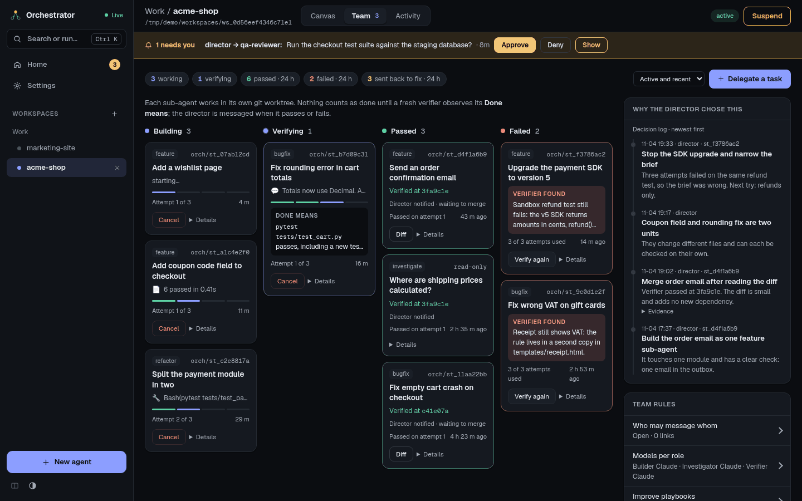

Agent Orchestrator
Run a team of coding agents on your own computer and stay in charge of it. You talk to one agent. It splits the job, others do the work, and nothing counts as done until an independent check has seen it work.
Getting started
Get started
Install it and run your first director task.
It drives the coding tools you already have: the Claude Code and Antigravity (Gemini) command-line programs, called CLIs in this guide. Each one keeps its own login and subscription. The orchestrator is the dashboard and the rules around them.

How it works
- Director. You start a director agent for your project and tell it what you want. It is the one agent you talk to.
- Sub-agents. The director splits the job into units and hands each one to a sub-agent. Code is written in a git worktree: a separate copy of your project on its own branch, so your own files are not touched while the work happens.
- Verifier. When a sub-agent says it is finished, a verifier checks the work. This is a brand-new agent that did not build it. It runs the check the director wrote down, called Done means. A failure goes back to the builder with the findings. A pass tells the director which branch to merge.
- You. You step in only when needed. Messages waiting for approval and failed work land in one inbox.
What the app has
HomeWhat needs you, who is working, and every workspace.Read more
CanvasEach agent is a live terminal card you can move, resize and type into.Read more
TeamSub-agents by stage, the director's decision log, and the team's rules.Read more
ActivityEvery message and run in one timeline, with live transcripts.Read more
Command palettePress Ctrl K to jump to any agent or run any action.Read more
SettingsConnections, performance, removed agents, and the theme.Read more

Where to go next
Getting startedInstall it and run your first director task.Read more
AgentsWorkspaces, the canvas, models, and how agents hand work to each other.Read more
TeamDelegation, the playbooks, the verifier, and Reflect.Read more
Staying in controlThe inbox, approvals, limits, and how to stop things.Read more
SettingsConfiguration, the security warning, updates, and troubleshooting.Read more
ChangelogWhat changed in each release.Read more